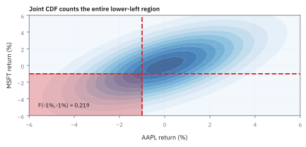
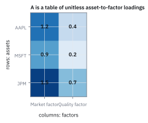

5.1 Joint CDF และ Joint PDF
รู้ว่าหุ้นแต่ละตัวลงบ่อยแค่ไหนยังไม่พอ ต้องรู้ว่ามันลงพร้อมกันบ่อยแค่ไหน และ joint CDF กับ joint PDF คือเครื่องมือที่เก็บข้อมูลส่วนนั้นไว้
กองทุนแห่งหนึ่งถือหุ้นสองตัว คือ AAPL (หุ้น Apple) กับ MSFT (หุ้น Microsoft) คนที่ดูแลความเสี่ยงของกองทุน (risk manager) กลัววันที่หุ้นทั้งสองตัวลงพร้อมกันมากที่สุด เพราะวันนั้นไม่มีตัวไหนช่วยพยุงอีกตัว พอร์ตจึงขาดทุนหนักที่สุด เขาจึงอยากรู้ว่าวันแบบนี้เกิดบ่อยแค่ไหน
ของที่รู้ (ข้อมูลสมมติ):
- มีข้อมูลย้อนหลัง 100 วันซื้อขาย (วันที่ตลาดหุ้นเปิด)
- ผลตอบแทนรายวันคือราคาที่เปลี่ยนไปในหนึ่งวัน คิดเป็นเปอร์เซ็นต์ของราคาเมื่อวาน เราเรียกวันที่ผลตอบแทนไม่เกิน −1% ว่า “วันลง”
- AAPL มีวันลง 20 วัน โอกาสที่ AAPL ลงจึงเป็น $20/100=0.20$
- MSFT ก็มีวันลง 20 วัน โอกาสที่ MSFT ลงจึงเป็น $0.20$ เท่ากัน
เพื่อนร่วมทีมตอบทันทีว่าสองตัวลงพร้อมกัน $0.20\times0.20=0.04$ คือ 4% ของวัน คำตอบนี้ถูกไหม และโอกาสที่อย่างน้อยหนึ่งตัวลงเป็นเท่าไร
ลองตอบก่อนเปิดเฉลย
ไม่ถูก เมื่อนับจากข้อมูลจริง วันที่สองตัวลงพร้อมกันมี 10 วัน โอกาสจึงเป็น $10/100=0.10$ มากกว่าคำตอบของเพื่อน $0.10/0.04=2.5$ เท่า
การคูณ $0.20\times0.20$ ใช้ได้เฉพาะเมื่อสองหุ้นเป็นอิสระกัน (independent) คือรู้ว่าตัวหนึ่งลงแล้วไม่ได้บอกอะไรเกี่ยวกับอีกตัวเลย แต่ AAPL กับ MSFT เป็นบริษัทเทคโนโลยีทั้งคู่ ข่าวร้ายของกลุ่มเทคโนโลยีวันเดียวจึงกดทั้งสองตัวลงพร้อมกัน
ส่วนโอกาสที่อย่างน้อยหนึ่งตัวลง ถ้าบวกวันลงของสองตัวตรง ๆ วันที่ลงพร้อมกันจะถูกนับสองครั้ง ครั้งแรกในฝั่ง AAPL ครั้งที่สองในฝั่ง MSFT จึงต้องลบออกหนึ่งครั้ง
ภาพรวมก่อนลงสูตร
ที่ผ่านมาเราดูตัวแปรสุ่มทีละตัว การแจกแจง (distribution) ของผลตอบแทน AAPL ตัวเดียวบอกได้ว่า AAPL ลงบ่อยแค่ไหน แต่บอกไม่ได้ว่ามันลงพร้อมกับ MSFT บ่อยแค่ไหน คำถามแบบนี้ต้องดูสองตัวไปพร้อมกัน กฎที่บอกโอกาสของสองตัวพร้อมกันเรียกว่า joint distribution (การแจกแจงร่วม)
วิธีมองที่ง่ายที่สุดคือวาดบนระนาบ ให้ $X$ คือผลตอบแทนของ AAPL ในวันหนึ่ง และ $Y$ คือผลตอบแทนของ MSFT ในวันเดียวกัน ทั้งคู่วัดเป็นจุดเปอร์เซ็นต์ เช่น $X=-1$ แปลว่า AAPL ลง 1% แต่ละวันให้คู่ตัวเลข $(X,Y)$ หนึ่งคู่ จึงเป็นจุดหนึ่งจุดบนระนาบ รูปด้านล่างวาด 100 วันเป็น 100 จุด แกนนอนคือผลตอบแทน AAPL แกนตั้งคือผลตอบแทน MSFT joint distribution ตอบว่าจุดเหล่านี้กองอยู่ตรงไหนมาก ตรงไหนน้อย
หน้านี้มีเครื่องมือสองชิ้น
- joint CDF $F(x,y)$ (CDF ย่อมาจาก cumulative distribution function) คือโอกาสที่ $X\le x$ และ $Y\le y$ ในวันเดียวกัน บนระนาบคือสัดส่วนของจุดที่อยู่ในมุมซ้ายล่างของจุด $(x,y)$
- joint PDF $f(x,y)$ (PDF ย่อมาจาก probability density function) ใช้เมื่อผลตอบแทนเป็นตัวเลขต่อเนื่อง มันบอกว่าจุดแน่นแค่ไหนต่อพื้นที่หนึ่งหน่วย ลองนึกว่าเรามีจุดเป็นล้านจุด density ก็คือความแน่นของจุดตรงนั้น โอกาสของบริเวณหนึ่งคือปริมาตรใต้ผิว density เหนือบริเวณนั้น
เราจะเริ่มจากการนับในตาราง แล้วนิยาม joint CDF จากนั้นใช้ “กฎสี่มุม” หาโอกาสของกรอบสี่เหลี่ยมใดก็ได้จาก CDF ต่อด้วยนิยาม joint PDF และย้อนจาก CDF กลับไปเป็น PDF ด้วยอนุพันธ์ ท้ายหน้าจะดูคำถามของพอร์ตจริง เช่น “พอร์ตที่แบ่งเงินลงสองหุ้นครึ่งต่อครึ่งขาดทุนเกิน 1% บ่อยแค่ไหน” คำถามนี้เป็นบริเวณรูปอื่นบนระนาบ ไม่ใช่มุมซ้ายล่าง
รูป — 100 วันบนระนาบ แบ่งด้วยเกณฑ์ −1% ของสองหุ้น
ศัพท์ที่ใช้ในหัวข้อนี้
- Joint distribution
- กฎที่บอกโอกาสของเหตุการณ์ที่เกี่ยวกับหลายตัวแปรพร้อมกัน เช่น “AAPL ลงและ MSFT ลงในวันเดียวกัน” การแจกแจงของแต่ละตัวแยกกันตอบคำถามนี้ไม่ได้
- Joint CDF $F_{X,Y}(x,y)$
- โอกาสที่ $X\le x$ และ $Y\le y$ พร้อมกัน บนระนาบคือมวลในมุมซ้ายล่างของจุด $(x,y)$ ใช้ได้กับตัวแปรทุกชนิด ทั้งแบบนับเป็นค่า ๆ (เช่นตารางนับวัน) และแบบต่อเนื่อง
- Joint PDF $f_{X,Y}(x,y)$
- ความหนาแน่นของโอกาสต่อพื้นที่หนึ่งหน่วยบนระนาบ ตัวมันเองไม่ใช่โอกาส ต้องอินทิเกรตเหนือบริเวณจึงจะได้โอกาส ใช้หาโอกาสของบริเวณรูปร่างใดก็ได้
- กฎสี่มุม (rectangle rule)
- สูตรที่เอาค่า CDF ที่สี่มุมของกรอบสี่เหลี่ยมมาบวกลบกัน เพื่อหาโอกาสที่จุด $(X,Y)$ ตกในกรอบ ใช้ได้แม้การแจกแจงไม่มี density
- Support
- บริเวณที่ density เป็นบวก นอก support โอกาสเป็นศูนย์ ต้องรู้ support ก่อนตั้งขอบของอินทิกรัล และก่อนแทนค่าลงสูตร CDF ที่เขียนไว้ใช้เฉพาะในบริเวณนั้น
- Marginal
- การแจกแจงของตัวแปรเดียวที่ดึงออกมาจาก joint distribution เช่น $F_X(x)=F_{X,Y}(x,+\infty)$ รายละเอียดอยู่ใน marginal distribution
- อิสระกัน (independent)
- สองตัวแปรเป็นอิสระกันเมื่อรู้ค่าของตัวหนึ่งแล้วไม่ได้ช่วยบอกอะไรเกี่ยวกับอีกตัว เฉพาะกรณีนี้โอกาสร่วมจึงเท่ากับผลคูณของโอกาสรายตัว รายละเอียดอยู่ใน ความเป็นอิสระ
- Correlation
- ตัวเลขระหว่าง −1 ถึง 1 ที่บอกว่าสองตัวแปรขยับไปทางเดียวกันแค่ไหน ค่าบวกแปลว่ามักขึ้นด้วยกันและลงด้วยกัน ค่าศูนย์แปลว่าไม่มีแนวโน้มเชิงเส้นแบบนั้น รายละเอียดอยู่ใน inner product มุม และ correlation
สัญลักษณ์และหน่วย
| สัญลักษณ์ | ความหมาย | หน่วย |
|---|---|---|
| $X,\ Y$ | ผลตอบแทนรายวันของ AAPL และ MSFT ($X=-1$ คือ −1%) | จุดเปอร์เซ็นต์ |
| $F_{X,Y}(x,y)$ | joint CDF: โอกาสที่ $X\le x$ และ $Y\le y$ | ไม่มีหน่วย (0 ถึง 1) |
| $f_{X,Y}(x,y)$ | joint PDF: โอกาสต่อพื้นที่ | ต่อ (จุดเปอร์เซ็นต์)² |
| $F_X,\ F_Y$ | CDF ของแต่ละตัวแปร (marginal) | ไม่มีหน่วย |
| $a\lt b,\ c\lt d$ | ขอบของกรอบ: $X$ อยู่ระหว่าง $a$ กับ $b$ และ $Y$ อยู่ระหว่าง $c$ กับ $d$ | จุดเปอร์เซ็นต์ |
| $\sigma_X,\ \sigma_Y$ | ส่วนเบี่ยงเบนมาตรฐาน (SD) ของ $X$ และ $Y$ ในแบบจำลอง Gaussian คือระยะที่ผลตอบแทนมักห่างจากค่าเฉลี่ย | จุดเปอร์เซ็นต์ |
| $\rho$ | correlation ระหว่าง $X$ กับ $Y$ | ไม่มีหน่วย (−1 ถึง 1) |
| $\Phi(z)$ | CDF ของ normal มาตรฐาน (ค่าเฉลี่ย 0, SD 1): โอกาสที่ค่าไม่เกิน $z$ | ไม่มีหน่วย |
ขั้นที่ 1 — นับโอกาสร่วมจากตาราง
ก่อนมีสูตรใด ๆ เราตอบคำถามของ risk manager ได้ด้วยการนับวันตรง ๆ ขั้นนี้ทำแบบนั้น เพื่อให้มีตัวเลขจริงไว้เทียบกับสูตรในขั้นต่อ ๆ ไป
โจทย์ให้อะไรมาบ้าง: ตารางข้างล่างนับวันจาก 100 วันซื้อขาย (ข้อมูลสมมติ) แยกตามว่าแต่ละหุ้นลงถึง −1% หรือไม่ ช่องทั้งสี่คือสี่ส่วนของรูปด้านบน เช่นช่องซ้ายบน 10 วันคือจุดสีน้ำเงินในมุมซ้ายล่างของรูป
| จำนวนวัน | MSFT $Y\le-1$ | MSFT $Y\gt-1$ | รวม |
|---|---|---|---|
| AAPL $X\le-1$ | 10 | 10 | 20 |
| AAPL $X\gt-1$ | 10 | 70 | 80 |
| รวม | 20 | 80 | 100 |
เราเทียบสามตัวเลข ตัวแรกคือโอกาสที่ลงพร้อมกันจากการนับ ตัวที่สองคือผลคูณที่เพื่อนใช้ ตัวที่สามคือโอกาสที่อย่างน้อยหนึ่งตัวลง ในสูตร จุลภาคภายใน $P(\ldots)$ แปลว่า “และ”
คำตอบ: สองหุ้นลงพร้อมกัน 10% ของวัน ไม่ใช่ 4% ผลคูณ 0.04 จะถูกก็ต่อเมื่อการรู้ว่า AAPL ลงไม่ได้บอกอะไรเกี่ยวกับ MSFT เลย แต่ข้อมูลนี้ไม่เป็นแบบนั้น ลองดูเฉพาะ 20 วันที่ AAPL ลง แล้วนับว่า MSFT ลงตามกี่วัน เทียบกับโอกาสที่ MSFT ลงในวันทั่วไป (เส้นตั้ง $\mid$ อ่านว่า “เมื่อรู้ว่า”)
ในวันที่ AAPL ลง MSFT ลงตามถึงครึ่งหนึ่ง แต่ในวันทั่วไปลงแค่ 1 ใน 5 การรู้ว่า AAPL ลงจึงบอกอะไรเกี่ยวกับ MSFT มาก สองหุ้นไม่ได้อิสระกัน ส่วนสูตร “อย่างน้อยหนึ่งตัว” ต้องลบ 0.10 เพราะ 10 วันที่ลงพร้อมกันอยู่ทั้งใน 20 วันของ AAPL และใน 20 วันของ MSFT การบวก $0.20+0.20$ จึงนับวันเหล่านี้สองครั้ง
ตรวจเองใน 10 วินาที: ตารางบอกว่าวันที่ไม่มีตัวไหนลงเลยมี 70 วัน วันที่เหลือคือวันที่มีอย่างน้อยหนึ่งตัวลง จึงมี $100-70=30$ วัน คิดเป็น $30/100=0.30$ ตรงกับสูตร
ขั้นที่ 2 — Joint CDF: นับมวลในมุมซ้ายล่าง
ตารางในขั้นที่แล้วตอบได้เฉพาะเกณฑ์ −1% ถ้าพรุ่งนี้ risk manager ถามว่า “AAPL ลงเกิน 2% และ MSFT ลงเกิน 3% พร้อมกันบ่อยแค่ไหน” เราต้องนับใหม่ทั้งตาราง เราจึงอยากได้ฟังก์ชันตัวเดียวที่รับคู่เกณฑ์ $(x,y)$ ใดก็ได้ แล้วคืนโอกาสที่ทั้งสองตัวไม่เกินเกณฑ์ของตัวเอง ฟังก์ชันนั้นคือ joint CDF
นิยามบอกว่า $F(x,y)$ นับเฉพาะวันที่ผ่านทั้งสองเกณฑ์ บนระนาบคือนับจุดทั้งหมดในมุมซ้ายล่างของจุด $(x,y)$ เช่น $F(-1,-1)=0.10$ คือ 10 จุดสีน้ำเงินในรูปแรก ค่านี้ไม่ได้แปลว่าผลตอบแทนเท่ากับ −1% พอดี มันรวมทุกวันที่ต่ำกว่า −1% ด้วย
ท่าที่จะใช้บ่อยที่สุดคือ $F_{X,Y}(x,+\infty)=F_X(x)$ ทำไมถึงได้ CDF ของ $X$ ตัวเดียว เพราะเกณฑ์ $Y\le+\infty$ เป็นจริงทุกวัน มันจึงไม่ได้กรองวันไหนออกเลย เหลือแค่เงื่อนไขของ $X$ ในตารางคือ
สองสูตรสุดท้ายเป็นขอบของระนาบ ถ้าบังคับให้ $X$ ต่ำกว่าทุกจำนวน ไม่มีวันไหนทำได้ โอกาสจึงเป็นศูนย์ ถ้าไม่จำกัดทั้งสองตัว ทุกวันผ่านเกณฑ์ โอกาสจึงเป็น 1
ถ้าเลื่อนเกณฑ์ไปทางขวาหรือขึ้นข้างบน มุมซ้ายล่างใหญ่ขึ้นและกินจุดมากขึ้น $F$ จึงไม่มีวันลดลง แต่สมบัตินี้ยังไม่พอ ฟังก์ชันที่จะเป็น joint CDF ได้ต้องให้โอกาสไม่ติดลบกับทุกกรอบสี่เหลี่ยมด้วย ขั้นถัดไปจะสร้างเครื่องมือสำหรับตรวจข้อนี้ คือกฎสี่มุม
ตารางนับวันมีจุดแค่ 100 จุด และตอบได้แค่เกณฑ์ที่เรานับไว้ ในงานจริงเรามักใช้แบบจำลอง (model) แทน คือสมมติรูปร่างของการแจกแจงด้วยตัวเลขไม่กี่ตัว แล้วคำนวณโอกาสของเกณฑ์ไหนก็ได้ รูปถัดไปและอีกหลายขั้นของหน้านี้ใช้แบบจำลอง Gaussian (การแจกแจงแบบระฆังคว่ำ ดู การแจกแจง normal) ที่มีค่าสมมติดังนี้
- ค่าเฉลี่ยผลตอบแทนรายวันของทั้งสองหุ้นเป็นศูนย์
- SD (ส่วนเบี่ยงเบนมาตรฐาน คือระยะที่ผลตอบแทนมักห่างจากค่าเฉลี่ย) ของ AAPL คือ $\sigma_X=2.5$ จุดเปอร์เซ็นต์
- SD ของ MSFT คือ $\sigma_Y=3$ จุดเปอร์เซ็นต์
- correlation ระหว่างสองหุ้นคือ $\rho=0.6$ เป็นบวก แปลว่ามักขึ้นด้วยกันและลงด้วยกัน
รูป — มุมซ้ายล่างของจุด (−1, −1) ภายใต้แบบจำลอง Gaussian

ขั้นที่ 3 — กฎสี่มุม: โอกาสของกรอบใดก็ได้
CDF ตอบได้แค่มุมซ้ายล่าง แต่คำถามจริงมักเป็นกรอบสี่เหลี่ยม เช่น “วันที่ AAPL อยู่ระหว่าง −2% ถึง 1% และ MSFT อยู่ระหว่าง −1% ถึง 2% มีบ่อยแค่ไหน” เราจึงต้องหาวิธีประกอบกรอบจากมุมซ้ายล่างหลาย ๆ อัน ให้กรอบคือ $X$ อยู่ระหว่าง $a$ กับ $b$ และ $Y$ อยู่ระหว่าง $c$ กับ $d$ สี่มุมของกรอบคือ $(a,c)$, $(b,c)$, $(a,d)$, $(b,d)$
ความคิดคือเริ่มจากของที่ใหญ่เกินแล้วตัดส่วนเกินทิ้ง $F(b,d)$ คือทุกอย่างในมุมซ้ายล่างของมุมขวาบน มันมีกรอบที่เราต้องการอยู่ข้างใน แต่มีแถบทางซ้ายและแถบข้างล่างติดมาด้วย เราตัดแถบซ้ายออกด้วย $F(a,d)$ และตัดแถบล่างออกด้วย $F(b,c)$
จุดที่คนมักลืมคือมุมเล็กซ้ายล่าง $F(a,c)$ มุมนี้อยู่ทั้งในแถบซ้ายและในแถบล่าง จึงถูกตัดไปสองครั้ง แต่ควรตัดแค่ครั้งเดียว เราจึงต้องบวกมันคืนหนึ่งครั้ง รูปด้านล่างวาดให้เห็นทีละชิ้น
ลองใช้กับตาราง วันที่ไม่มีตัวไหนลงถึง −1% คือ $X\gt-1$ และ $Y\gt-1$ เป็นกรอบที่ $a=-1,\ b=+\infty,\ c=-1,\ d=+\infty$ แทนลงสูตรได้
ตรงกับ 70 วันในตาราง ถ้าลืมบวกมุมคืนจะได้ $1-0.20-0.20=0.60$ หายไป 10 วัน ซึ่งก็คือ 10 วันที่ลงพร้อมกันนั่นเอง
กฎนี้ใช้แค่ค่า $F$ ไม่ต้องใช้ density เลย จึงใช้ได้ทั้งกับตารางนับวันและกับแบบจำลองต่อเนื่อง ข้อควรระวังมีข้อเดียวคือขอบของกรอบ สูตรนี้นับกรอบที่ไม่รวมขอบซ้ายและขอบล่าง ($a\lt X$) แต่รวมขอบขวาและขอบบน ($X\le b$) สำหรับตัวแปรต่อเนื่อง ขอบไม่มีมวล จึงไม่ต่างกัน แต่ถ้ามีมวลวางอยู่บนขอบพอดี เช่นตารางที่ผลตอบแทนเป็นค่าเต็ม ๆ ผลจะต่าง
รูป — ทำไมต้องบวกมุมกลับหนึ่งครั้ง
ขั้นที่ 4 — Joint PDF: โอกาสคือปริมาตร ไม่ใช่ความสูง
ในแบบจำลอง Gaussian ผลตอบแทนเป็นตัวเลขต่อเนื่อง จะเป็น −1.2371…% ก็ได้ โอกาสที่จะได้คู่ค่าใดคู่หนึ่งพอดีจึงเป็นศูนย์ เหมือนโอกาสที่ปาเข็มแล้วโดนจุดเรขาคณิตจุดเดียวพอดี ของที่มีความหมายคือโอกาสต่อพื้นที่ หรือความแน่นของจุดตรงนั้น ซึ่งคือ density $f$ ขั้นนี้บอกว่าจาก density จะได้โอกาสอย่างไร ให้ $A$ เป็นบริเวณใดก็ได้บนระนาบ และ $P_A$ คือโอกาสที่จุด $(X,Y)$ ตกใน $A$ ส่วน $u,v$ เป็นตัวแปรที่ใช้อินทิเกรตแทน $x,y$
หัวใจของนิยามคือ โอกาสของบริเวณ $A$ เท่ากับปริมาตรใต้ผิว density เหนือ $A$ density จึงต้องไม่ติดลบ เพราะปริมาตรที่ติดลบจะให้โอกาสติดลบ และปริมาตรเหนือทั้งระนาบ ($\mathbb R^2$) ต้องเป็น 1 เพราะจุด $(X,Y)$ ต้องตกที่ใดที่หนึ่งแน่นอน
สูตรของ $F_{X,Y}(x,y)$ ไม่ใช่กฎใหม่ มันคือนิยามเดียวกันเมื่อเลือก $A$ เป็นมุมซ้ายล่างของจุด $(x,y)$ สูตรนี้จึงเป็นสะพานจาก PDF ไปหา CDF
สูตรสุดท้ายบอกวิธีอ่านตัวเลข density ในกล่องเล็กกว้าง $\Delta x$ สูง $\Delta y$ ผิว density แทบเรียบ ปริมาตรจึงประมาณความสูงคูณพื้นที่ฐาน ดังนั้น $f$ ไม่ใช่โอกาส มันคือโอกาสหารด้วยพื้นที่ หน่วยจึงเป็น “ต่อ (จุดเปอร์เซ็นต์)²”
ลองกับแบบจำลอง Gaussian ที่ตั้งไว้ ($\sigma_X=2.5$, $\sigma_Y=3$, $\rho=0.6$) density สูงสุดที่จุดศูนย์กลาง $(0,0)$ เพราะค่าเฉลี่ยของทั้งสองหุ้นเป็นศูนย์ สูตร density อยู่ใน multivariate normal density ที่จุดศูนย์กลาง เลขชี้กำลังในสูตรเป็นศูนย์ จึงเหลือแค่ตัวคูณข้างหน้า
หน่วยคือต่อ (จุดเปอร์เซ็นต์)² กล่องกว้าง 0.1 จุดเปอร์เซ็นต์ สูง 0.1 จุดเปอร์เซ็นต์รอบจุดนั้นมีพื้นที่ $0.1\times0.1=0.01$ โอกาสที่จุดตกในกล่องจึงเป็น $0.0265\times0.01=0.000265$
ถ้าเปลี่ยนไปวัดผลตอบแทนเป็นทศนิยม (−1% เขียนเป็น −0.01) ทุกระยะบนแต่ละแกนหดลง 100 เท่า พื้นที่จึงหดลง $100\times100=10{,}000$ เท่า ปริมาตรต้องเท่าเดิมเพราะเป็นโอกาสของเหตุการณ์เดิม ความสูงจึงต้องเพิ่ม $10{,}000$ เท่า
ความสูงเกิน 1 ได้โดยไม่ผิดกฎอะไร เพราะความสูงไม่ใช่โอกาส
รูป — แผนที่ความหนาแน่นของผลตอบแทนสองหุ้น

ขั้นที่ 5 — ตัวอย่างที่คำนวณได้ทั้งสองทาง
ตอนนี้เรามีสองทางหาโอกาสของกรอบ ทางแรกคือกฎสี่มุมกับ CDF ทางที่สองคืออินทิเกรต density เหนือกรอบตรง ๆ ทั้งสองทางควรได้คำตอบเดียวกัน แต่ Gaussian อินทิเกรตด้วยมือไม่ได้ ขั้นนี้จึงใช้ density ของเล่นที่คิดด้วยมือได้ครบทุกขั้น เพื่อดูว่าสองทางตรงกันจริง
โจทย์ให้อะไรมาบ้าง:
- ตัวแปร $X,Y$ ไม่มีหน่วย มีค่าอยู่ในสี่เหลี่ยม $0\le x\le1,\ 0\le y\le1$ เท่านั้น (สี่เหลี่ยมนี้คือ support)
- density คือ $f(x,y)=x+y$ ในสี่เหลี่ยม และเป็นศูนย์นอกสี่เหลี่ยม
- ต้องการโอกาสของกรอบ $0.3\lt X\le0.8$ และ $0.4\lt Y\le0.9$
ก่อนใช้ $f$ ต้องตรวจว่ามันเป็น density ได้จริง คือไม่ติดลบ (จริง เพราะ $x,y\ge0$) และปริมาตรรวมเป็น 1 อินทิเกรตทีละแกน เริ่มจาก $y$ โดยถือ $x$ เป็นค่าคงที่
ทางที่หนึ่ง ผ่าน CDF: หา $F(x,y)$ จากนิยามในขั้นที่แล้ว คืออินทิเกรต density เหนือมุมซ้ายล่าง เพราะนอกสี่เหลี่ยม density เป็นศูนย์ ขอบล่างของอินทิกรัลจึงเริ่มที่ 0 แทน $-\infty$ อินทิเกรตตาม $v$ ก่อน แล้วตาม $u$
แล้วแทนสี่มุมของกรอบลงกฎสี่มุม ($a=0.3,\ b=0.8,\ c=0.4,\ d=0.9$)
ทางที่สอง อินทิเกรตตรง ๆ: อินทิเกรต $x+y$ ตาม $y$ จาก 0.4 ถึง 0.9 ก่อน ช่วงนี้ยาว 0.5 ส่วน $x$ ถือเป็นค่าคงที่ แล้วจึงอินทิเกรตตาม $x$ จาก 0.3 ถึง 0.8
คำตอบ: โอกาสของกรอบคือ 0.300 ทั้งสองทาง ทางผ่าน CDF ลงแรงครั้งเดียวตอนหา $F$ หลังจากนั้นถามกรอบไหนก็แค่แทนค่าสี่ครั้ง ส่วนทางอินทิเกรตตรงต้องอินทิเกรตใหม่ทุกครั้งที่เปลี่ยนกรอบ
ตรวจเองใน 10 วินาที: density เป็นเส้นตรงใน $x$ และ $y$ ค่าเฉลี่ยของมันในกรอบจึงเท่ากับค่าที่จุดกลางกรอบ $(0.55,\ 0.65)$ ปริมาตรคือค่าเฉลี่ยนั้นคูณพื้นที่ฐาน
รูป — density x + y บนสี่เหลี่ยม และกรอบที่ถาม
ขั้นที่ 6 — จาก CDF กลับมาเป็น PDF
บางครั้งเรามี CDF อยู่ในมือแต่ไม่มี density เช่นได้ $F$ มาจากแบบจำลองสำเร็จรูป ตอนนิยาม joint PDF เราไปจาก PDF สู่ CDF ด้วยการอินทิเกรต ทางกลับจึงควรเป็นการหาอนุพันธ์ แต่หาอนุพันธ์ตามอะไรกี่ครั้ง วิธีคิดคือย้อนกลับไปที่ความหมายของ density “โอกาสหารด้วยพื้นที่” ใช้กฎสี่มุมหาโอกาสของกล่องเล็กกว้าง $h$ สูง $k$ ที่มุมล่างซ้ายอยู่ที่ $(x,y)$ แล้วหารด้วยพื้นที่ $hk$ ก็จะได้ density เฉลี่ยในกล่อง เรียกว่า $D_{h,k}$
วงเล็บเหลี่ยมคือโอกาสของกล่องเล็กตามกฎสี่มุม หารด้วยพื้นที่ $hk$ จึงได้โอกาสต่อพื้นที่ เมื่อให้กล่องหดลงจนเหลือจุดเดียว ค่าเฉลี่ยในกล่องก็กลายเป็น density ที่จุดนั้น ผลของลิมิตนี้คืออนุพันธ์ผสม (mixed partial derivative) คือหาอนุพันธ์ตาม $x$ หนึ่งครั้ง แล้วตาม $y$ อีกหนึ่งครั้ง ทำไมต้องสองครั้ง เพราะกล่องมีสองด้าน ส่วนต่าง $F$ ในแนว $x$ หารด้วย $h$ ให้อนุพันธ์ตาม $x$ แล้วส่วนต่างของผลนั้นในแนว $y$ หารด้วย $k$ ให้อนุพันธ์ตาม $y$
ลองกับ $F=(x^2y+xy^2)/2$ ของตัวอย่าง $x+y$ แต่ละพจน์ของ $F$ เป็นฟังก์ชันของ $x$ คูณฟังก์ชันของ $y$ สำหรับพจน์แบบนี้ ผลบวกลบสี่มุมในวงเล็บเหลี่ยมแยกเป็นผลคูณได้ คือ (ส่วนต่างในแนว $x$) × (ส่วนต่างในแนว $y$) ให้ $\Delta[\cdot]$ แทนผลบวกลบสี่มุมนั้น
density เฉลี่ยในกล่องจึงเท่ากับ density ที่มุม $x+y$ บวกส่วนเกินเล็ก ๆ $(h+k)/2$
ที่จุด $(0.5,0.2)$ density จริงคือ $0.5+0.2=0.7$ ลองใช้กล่องจัตุรัส $h=k$ ที่เล็กลงเรื่อย ๆ
ส่วนเกิน $(h+k)/2$ หายไปเมื่อกล่องหด และถ้าหาอนุพันธ์ผสมของ $F$ ตรง ๆ ก็ได้ $x+y$ กลับมาพอดี
ทางนี้ใช้ได้ตรงจุดที่ $F$ เรียบพอจะหาอนุพันธ์ได้ และไม่ใช่ทุก joint CDF จะมี density สองมิติ ตัวอย่างสุดขั้วคือ $Y=X$ ทุกครั้ง ทุกจุดจึงอยู่บนเส้นทแยง $y=x$ CDF ยังหาได้ เพราะเงื่อนไข $X\le x$ และ $X\le y$ เป็นจริงพร้อมกันก็ต่อเมื่อ $X$ ไม่เกินค่าที่เล็กกว่าในสองค่านั้น
แต่เส้นมีพื้นที่ศูนย์ density ใด ๆ อินทิเกรตบนพื้นที่ศูนย์ก็ได้ปริมาตรศูนย์ จึงไม่มีฟังก์ชัน $f$ ที่ให้มวลทั้งหมด 1 บนเส้นนี้ได้ นี่คือเหตุผลที่นิยามหลักของ joint distribution คือ CDF ไม่ใช่ PDF เพราะ CDF มีอยู่เสมอ
ขั้นที่ 7 — คำถามพอร์ตไม่ใช่มุมซ้ายล่าง
joint CDF ตอบคำถามแบบ “ทั้งสองตัวต่ำกว่าเกณฑ์ของตัวเอง” แต่โต๊ะเทรด (desk) มักถามเรื่องเงินของพอร์ตทั้งก้อน เช่น “พอร์ตที่แบ่งเงินลง AAPL ครึ่งหนึ่ง MSFT ครึ่งหนึ่ง ขาดทุนเกิน 1% บ่อยแค่ไหน” ผลตอบแทนของพอร์ตนี้คือค่าเฉลี่ยของสองหุ้น ลองดูวันที่ AAPL ลง 3% แต่ MSFT ขึ้น 0.5%
พอร์ตขาดทุน 1.25% ทั้งที่ MSFT ไม่ได้ลงเลย วันแบบนี้ไม่อยู่ในมุมซ้ายล่าง คำถามของพอร์ตจึงเป็นบริเวณอีกรูปหนึ่ง
โจทย์ให้อะไรมาบ้าง:
- แบบจำลอง Gaussian เดิม: ค่าเฉลี่ยศูนย์ $\sigma_X=2.5$, $\sigma_Y=3$ จุดเปอร์เซ็นต์ และ $\rho=0.6$
- ผลตอบแทนพอร์ตคือ $R_P=0.5X+0.5Y$ (น้ำหนัก 0.5 ต่อหุ้น)
- ต้องการ $P(R_P\le-1)$
บนระนาบ เงื่อนไข $0.5x+0.5y\le-1$ คูณสองทั้งสองข้างได้ $x+y\le-2$ บริเวณนี้คือครึ่งระนาบใต้เส้นทแยง $x+y=-2$ การอินทิเกรต density เหนือครึ่งระนาบด้วยมือนั้นยาก แต่มีทางลัด ผลบวกถ่วงน้ำหนักของสองตัวแปรที่เป็น Gaussian ร่วมกันก็เป็น Gaussian เหมือนกัน (เหตุผลอยู่ใน linear combinations ของ MVN) เราจึงต้องหาแค่ SD ของ $R_P$ เรียกว่า $\sigma_P$
variance (SD ยกกำลังสอง) ของผลบวก $aX+bY$ คือ $a^2\sigma_X^2+b^2\sigma_Y^2+2ab\rho\sigma_X\sigma_Y$ พจน์สุดท้ายคือส่วนที่สองหุ้นขยับไปด้วยกัน (covariance) สูตรนี้จะพิสูจน์ใน ผลที่ตามมาของความเป็นอิสระ แทน $a=b=0.5$
ขั้นสุดท้ายแปลงเกณฑ์ −1 ให้เป็น “กี่ SD จากค่าเฉลี่ย” ด้วยการหารด้วย $\sigma_P$ แล้วเปิด $\Phi$ ซึ่งคือ CDF ของ normal มาตรฐาน (ค่าเฉลี่ย 0, SD 1)
คำตอบ: พอร์ตครึ่งต่อครึ่งขาดทุนเกิน 1% ราว 34.2% ของวัน ตัวเลขนี้คือปริมาตรใต้ density เหนือครึ่งระนาบ $x+y\le-2$ ไม่ใช่เหนือมุมซ้ายล่าง
ตรวจเองใน 10 วินาที: มุมซ้ายล่าง $X\le-1,\ Y\le-1$ อยู่ในครึ่งระนาบนี้ทั้งมุม เพราะถ้าทั้งสองตัวไม่เกิน −1 ค่าเฉลี่ยของสองตัวก็ไม่เกิน −1 คำตอบจึงต้องไม่น้อยกว่า $F(-1,-1)=0.219$ และ $0.342\gt0.219$ จริง
รูป — ครึ่งระนาบของพอร์ต เทียบกับมุมซ้ายล่าง
ขั้นที่ 8 — หลายตัวแปร: เงื่อนไขทุกตัวพร้อมกัน
พอร์ตจริงมีหุ้นหลายสิบตัว ไม่ใช่สองตัว นิยามเดิมขยายไปได้ตรง ๆ ให้ $n$ คือจำนวนหุ้น และ $\mathbf X=(X_1,\ldots,X_n)$ คือเวกเตอร์ที่เก็บผลตอบแทนของหุ้นทุกตัวในวันเดียวกัน ส่วน $\mathbf x=(x_1,\ldots,x_n)$ คือเกณฑ์ของแต่ละตัว
joint CDF ยังเป็นการนับมุมเหมือนเดิม คือนับวันที่หุ้นทุกตัวไม่เกินเกณฑ์ของตัวเองพร้อมกัน ต่างแค่มุมนี้อยู่ใน $n$ มิติ ถ้ามี density ก็ได้ CDF จากการอินทิเกรตทีละแกนจนครบ $n$ แกน และทางกลับคือหาอนุพันธ์ตามทุกพิกัด พิกัดละหนึ่งครั้ง
สูตรสุดท้ายคือท่าเดียวกับตอนได้ CDF ของ $X$ จาก joint CDF ใส่ $+\infty$ ให้กับตัวแปรที่ไม่สนใจ เกณฑ์ของตัวเหล่านั้นจึงเป็นจริงทุกวันและไม่กรองอะไรออก ที่เหลือคือ joint distribution ของคู่ที่สนใจ เช่นจากหุ้น 50 ตัว ดึงเฉพาะ AAPL กับ MSFT ออกมา
ปัญหาในทางปฏิบัติคือข้อมูลไม่พอ ตารางสองหุ้นมี $2\times2=4$ ช่อง ถ้าแบ่งแต่ละหุ้นเป็น “ลง” กับ “ไม่ลง” แบบเดียวกัน หุ้น 10 ตัวต้องใช้ $2^{10}=1{,}024$ ช่อง แต่ตลาดหุ้นสหรัฐเปิดราว 252 วันต่อปี ($365$ วัน หักเสาร์อาทิตย์ 104 วัน และวันหยุดตลาดราว 9 วัน ได้ $365-104-9=252$) ข้อมูลหนึ่งปีจึงมีวันน้อยกว่าจำนวนช่อง ช่องส่วนใหญ่จะว่างเปล่า งานจริงจึงใช้แบบจำลองที่มีตัวเลขให้ประมาณน้อย เช่น Gaussian ที่ใช้แค่ค่าเฉลี่ยกับ covariance matrix หรือ Gaussian copula
ความผิดที่ให้คำตอบผิดแบบเงียบ ๆ
คูณโอกาสรายตัวแทนโอกาสร่วม: การคูณถูกเฉพาะเมื่อสองตัวอิสระกัน ในตาราง ค่าที่ผิดคือ $0.20\times0.20=0.04$ ค่าที่ถูกคือ $10/100=0.10$ ผลคูณต่ำไป $0.10/0.04=2.5$ เท่า ในแบบจำลอง Gaussian ค่าที่ผิดคือ $0.345\times0.369=0.127$ ค่าที่ถูกคือ $F(-1,-1)=0.219$ เมื่อหุ้นขยับไปทางเดียวกัน ความผิดนี้ทำให้ความเสี่ยงของวันที่ลงพร้อมกันดูเล็กกว่าจริงเสมอ
ลืมบวกมุมคืนในกฎสี่มุม: มุมเล็กถูกลบสองครั้งแต่ไม่ได้บวกคืน ค่าที่ผิดคือ $1-0.20-0.20=0.60$ ค่าที่ถูกคือ $1-0.20-0.20+0.10=0.70$ ส่วนที่หายไป 0.10 คือ 10 วันที่ลงพร้อมกัน
อ่านความสูงของ density เป็นโอกาส: density คือโอกาสต่อพื้นที่ ไม่ใช่โอกาส สำหรับ $f=x+y$ ความสูงที่จุดหนึ่งคือ $f(0.5,0.5)=0.5+0.5=1$ แต่โอกาสสะสมในมุมซ้ายล่างของจุดเดียวกันคือ
และในแบบจำลอง Gaussian ที่วัดผลตอบแทนเป็นทศนิยม ความสูงที่จุดศูนย์กลางคือ 265 ซึ่งเป็นโอกาสไม่ได้แน่นอน
แทนค่านอก support ลงสูตรตรง ๆ: สูตร $F=(x^2y+xy^2)/2$ ใช้ได้เฉพาะในสี่เหลี่ยม $0\le x,y\le1$ ค่าที่ผิดคือแทน $x=y=2$ ตรง ๆ ได้ $(2^2\times2+2\times2^2)/2=(8+8)/2=8$ ซึ่งเป็นโอกาสไม่ได้ ค่าที่ถูกคือตัดแต่ละพิกัดให้อยู่ในช่วง 0 ถึง 1 ก่อน เพราะนอกสี่เหลี่ยมไม่มีมวลให้นับเพิ่ม จึงได้ $F(2,2)=F(1,1)=(1+1)/2=1$
เปลี่ยนหน่วยแล้วไม่ปรับ density: เปลี่ยนจากจุดเปอร์เซ็นต์เป็นทศนิยมแล้วพื้นที่หด $10{,}000$ เท่า ถ้าไม่คูณ density ด้วย $10{,}000$ ปริมาตรรวมจะเหลือ $1/10{,}000=0.0001$ ค่าที่ถูกคือปริมาตรรวมต้องเป็น 1 เสมอ
ใช้ทำอะไรบนโต๊ะจริง
ฝ่ายความเสี่ยงของธนาคารและกองทุนใช้โอกาสร่วมทุกวัน งานแรกคือการทดสอบภาวะวิกฤต (stress test) คือการถามว่าถ้าเกิดเหตุร้ายพร้อมกันหลายเรื่อง พอร์ตจะเสียหายเท่าไร เช่นโอกาสที่หุ้นกลุ่มเดียวกันลงแรงพร้อมกัน หรือโอกาสที่ลูกหนี้หลายรายผิดนัดชำระหนี้ในปีเดียวกัน คำถามเหล่านี้ตอบด้วยการแจกแจงรายตัวไม่ได้
งานที่สองคือตัวเลขความเสี่ยงประจำวัน เช่น VaR (value at risk) ที่ระดับ 99% คือขนาดการขาดทุนที่พอร์ตจะขาดทุนเกินเพียงราว 1 วันจาก 100 วัน การหา VaR คือการหาโอกาสของครึ่งระนาบแบบพอร์ตครึ่งต่อครึ่งด้านบน แต่ทำในหลายมิติ รายละเอียดอยู่ใน VaR และ expected shortfall
เมื่อข้อมูลไม่พอจะประมาณ joint distribution ตรง ๆ โต๊ะเทรดจะแยกงานเป็นสองส่วน ส่วนแรกคือการแจกแจงของแต่ละตัว ส่วนที่สองคือรูปแบบที่ตัวแปรเกิดร่วมกัน แล้วค่อยนำสองส่วนมาประกอบกัน นี่คือแนวคิดของ Gaussian copula
โจทย์ตรวจความเข้าใจ
1. risk manager อยากรู้ว่าบ่อยแค่ไหนที่ AAPL ลงถึง −1% แต่ MSFT ไม่ลงถึง −1% ในวันเดียวกัน ใช้ตาราง 100 วันในขั้นแรก หาโอกาสนี้ด้วยการนับ แล้วเขียนเป็นกฎสี่มุมด้วยค่า $F$ เพื่อตรวจว่าได้เท่ากัน
เฉลย
นับตรงจากช่องขวาบนของตารางได้ 10 วัน โอกาสจึงเป็น $10/100=0.10$
ในรูปกฎสี่มุม กรอบคือ $X\le-1$ ซึ่งให้ $a=-\infty,\ b=-1$ และ $Y\gt-1$ ซึ่งให้ $c=-1,\ d=+\infty$ ทุกเทอมที่มี $-\infty$ เป็นศูนย์ เพราะไม่มีวันไหนที่ผลตอบแทนต่ำกว่าทุกจำนวน
ตรงกับการนับ
2. ใช้ density ของเล่น $f=x+y$ บนสี่เหลี่ยม $0\le x,y\le1$ จากตัวอย่างด้านบน จงหาโอกาสที่ $X\le0.5$ โดยไม่สนใจ $Y$ ทำสองทาง ทางแรกใช้ joint CDF ทางที่สองอินทิเกรต density ตรง ๆ
เฉลย
ทางแรก: “ไม่สนใจ $Y$” คือดันเกณฑ์ของ $Y$ ไปที่ $+\infty$ แต่ $Y$ ไม่เกิน 1 อยู่แล้ว เกณฑ์ $Y\le1$ จึงให้ผลเท่ากัน แทนลงสูตร $F=(x^2y+xy^2)/2$
ทางที่สอง: ตัวอย่างด้านบนอินทิเกรต $x+y$ ตาม $y$ จาก 0 ถึง 1 ได้ $x+\tfrac12$ แล้วอินทิเกรตต่อตาม $x$ จาก 0 ถึง 0.5
ตรงกัน ฟังก์ชัน $x+\tfrac12$ นี้คือ density ของ $X$ ตัวเดียว เรียกว่า marginal density ของ $X$
3. ผู้จัดการกองทุนสงสัยว่าการแบ่งเงินลงสองหุ้นช่วยลดความเสี่ยงได้จริงแค่ไหน ใช้แบบจำลอง Gaussian เดิม ($\sigma_X=2.5$, $\sigma_Y=3$, $\rho=0.6$) ถ้าลงเงินทั้งหมดใน AAPL ตัวเดียว โอกาสขาดทุนเกิน 1% ในวันหนึ่งเป็นเท่าไร เทียบกับพอร์ตครึ่งต่อครึ่งที่ได้ 0.342 แล้วถ้า correlation เป็นศูนย์ พอร์ตครึ่งต่อครึ่งจะได้เท่าไร
เฉลย
ถือ AAPL ตัวเดียว: หารเกณฑ์ด้วย SD ของ AAPL แล้วเปิด $\Phi$
พอร์ตครึ่งต่อครึ่งได้ 0.342 ลดลงแค่ $0.345-0.342=0.003$ เพราะ SD ของพอร์ต $\sigma_P=2.462$ แทบไม่ต่างจาก SD ของ AAPL ตัวเดียว 2.5 correlation 0.6 ทำให้สองหุ้นขยับไปด้วยกันมาก การแบ่งเงินจึงช่วยได้น้อย
ถ้า correlation เป็นศูนย์ พจน์ covariance $2(0.25)(\rho)(2.5)(3)$ หายไป
correlation ที่ต่ำลงทำให้การแบ่งเงินลดโอกาสขาดทุนเกิน 1% จาก 0.345 เหลือ 0.304
คำนวณซ้ำด้วย JavaScript
เปิดดูโค้ด
// 1) the 100-day table: rows X<=-1, X>-1 ; columns Y<=-1, Y>-1
const days = [[10, 10], [10, 70]];
const n = 100;
const both = days[0][0] / n; // 0.10
const fx = (days[0][0] + days[0][1]) / n; // 0.20
const fy = (days[0][0] + days[1][0]) / n; // 0.20
console.log({ both, product: fx * fy, atLeastOne: fx + fy - both,
neither: 1 - fx - fy + both }); // 0.04, 0.30, 0.70
// 2) toy density f = x + y on the unit square
const clip = t => Math.max(0, Math.min(1, t));
const F = (x, y) => { x = clip(x); y = clip(y); return (x*x*y + x*y*y) / 2; };
const box = F(.8, .9) - F(.3, .9) - F(.8, .4) + F(.3, .4);
let integral = 0;
const m = 200, step = .5 / m;
for (let i = 0; i < m; i++) for (let j = 0; j < m; j++) {
const x = .3 + (i + .5) * step, y = .4 + (j + .5) * step;
integral += (x + y) * step * step;
}
console.log({ box, integral, total: F(1, 1), F22: F(2, 2) }); // 0.3, 0.3, 1, 1
// 3) mixed difference quotient -> density 0.7 at (0.5, 0.2)
for (const h of [0.1, 0.01, 1e-4]) {
const D = (F(.5+h, .2+h) - F(.5, .2+h) - F(.5+h, .2) + F(.5, .2)) / (h*h);
console.log(h, D.toFixed(4)); // 0.8000, 0.7100, 0.7001
}
// 4) Gaussian model: centre density and the 50/50 portfolio
function Phi(x) { // normal CDF by series
const a = Math.abs(x); let t = a, s = a;
for (let k = 1; k < 200; k++) { t *= a*a / (2*k + 1); s += t; }
const half = Math.exp(-a*a/2) / Math.sqrt(2*Math.PI) * s;
return x < 0 ? .5 - half : .5 + half;
}
const sx = 2.5, sy = 3, r = .6;
const f00 = 1 / (2 * Math.PI * sx * sy * Math.sqrt(1 - r*r));
const varP = .25*sx*sx + .25*sy*sy + 2*.25*r*sx*sy;
console.log({ f00, f00decimal: f00 * 1e4, varP,
portfolio: Phi(-1 / Math.sqrt(varP)), aaplOnly: Phi(-1 / sx) });
// f00 0.0265, 265.26 ; varP 6.0625 ; portfolio 0.342 ; aaplOnly 0.345สิ่งที่ควรตอบได้หลังอ่าน
- joint CDF $F(x,y)=P(X\le x,\,Y\le y)$ คือมวลในมุมซ้ายล่างของจุด $(x,y)$ ตารางสมมติให้ $F(-1,-1)=0.10$ ไม่ใช่ผลคูณ $0.20\times0.20=0.04$ เพราะสองหุ้นไม่ได้อิสระกัน
- โอกาสของกรอบใดก็ได้คือ $F(b,d)-F(a,d)-F(b,c)+F(a,c)$ มุมเล็กซ้ายล่างถูกลบสองครั้ง จึงต้องบวกคืนหนึ่งครั้ง
- joint PDF คือโอกาสต่อพื้นที่ ต้องอินทิเกรตเหนือบริเวณจึงได้โอกาส ความสูงของมันเกิน 1 ได้ และมีหน่วยต่อพื้นที่
- อนุพันธ์ผสม $\partial^2F/\partial x\,\partial y$ ของ CDF คืน density กลับมา ($x+y$ ในตัวอย่าง) แต่ไม่ใช่ทุก joint distribution จะมี density
- คำถามของพอร์ตเป็นครึ่งระนาบ ไม่ใช่มุม พอร์ตครึ่งต่อครึ่งขาดทุนเกิน 1% มีโอกาส 0.342 มากกว่ามุมซ้ายล่างที่ได้ 0.219
นิยามของ joint CDF แอบใช้ท่าหนึ่งไปแล้ว คือดันเกณฑ์ของอีกตัวไปที่ $+\infty$ เพื่อให้เหลือตัวแปรเดียว หน้าถัดไป marginal distribution ทำท่านี้ให้เป็นระบบ ทั้งกับตาราง กับ density และกับ support ที่ไม่ใช่สี่เหลี่ยม